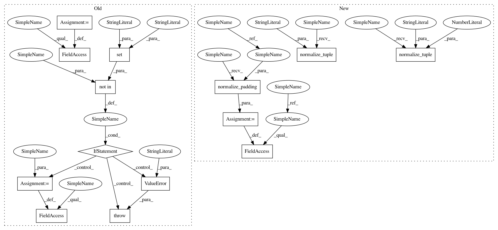

6710396acaf62b40ba01fadd9d488d6641995d83,keras/layers/pooling.py,_Pooling2D,__init__,#_Pooling2D#Any#Any#Any#Any#,114
Before Change
super(_Pooling2D, self).__init__(**kwargs)
if data_format == "default":
data_format = K.image_data_format()
self.pool_size = tuple(pool_size)
if strides is None:
strides = self.pool_size
self.strides = tuple(strides)
if border_mode not in {"valid", "same"}:
raise ValueError("`border_mode` must be in {valid, same}.")
self.border_mode = border_mode
if data_format not in {"channels_last", "channels_first"}:
raise ValueError("`data_format` must be in {"channels_last", "channels_first"}.")
self.data_format = data_format
self.input_spec = [InputSpec(ndim=4)]
After Change
Abstract class for different pooling 2D layers.
def __init__(self, pool_size=(2, 2), strides=None, padding="valid",
data_format=None, **kwargs):
super(_Pooling2D, self).__init__(**kwargs)
data_format = conv_utils.normalize_data_format(data_format)
if strides is None:
strides = pool_size
self.pool_size = conv_utils.normalize_tuple(pool_size, 2, "pool_size")
self.strides = conv_utils.normalize_tuple(pool_size, 2, "strides")
self.padding = conv_utils.normalize_padding(padding)
self.data_format = conv_utils.normalize_data_format(data_format)
self.input_spec = [InputSpec(ndim=4)]
def get_output_shape_for(self, input_shape):
In pattern: SUPERPATTERN
Frequency: 3
Non-data size: 14
Instances
Project Name: keras-team/keras
Commit Name: 6710396acaf62b40ba01fadd9d488d6641995d83
Time: 2017-02-09
Author: francois.chollet@gmail.com
File Name: keras/layers/pooling.py
Class Name: _Pooling2D
Method Name: __init__
Project Name: keras-team/keras
Commit Name: 6710396acaf62b40ba01fadd9d488d6641995d83
Time: 2017-02-09
Author: francois.chollet@gmail.com
File Name: keras/layers/pooling.py
Class Name: _Pooling3D
Method Name: __init__
Project Name: keras-team/keras
Commit Name: 6710396acaf62b40ba01fadd9d488d6641995d83
Time: 2017-02-09
Author: francois.chollet@gmail.com
File Name: keras/layers/pooling.py
Class Name: _Pooling1D
Method Name: __init__
Project Name: keras-team/keras
Commit Name: 6710396acaf62b40ba01fadd9d488d6641995d83
Time: 2017-02-09
Author: francois.chollet@gmail.com
File Name: keras/layers/pooling.py
Class Name: _Pooling2D
Method Name: __init__